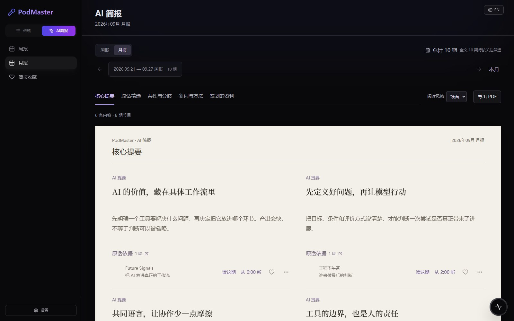

先把内容放在一起
订阅 RSS 播客、YouTube 频道和 B 站 UP 主。优先获取已有字幕，需要时再进行本地转写。
共享内容库，每个人保留自己的阅读与收听进度。给听见的好观点，一个去处
把播客和视频放进同一个内容库。逐篇留下解读，再把值得记住的观点，整理成自己的周报与月报。

值得记住的一个观点
工具的价值，
取决于人的判断。
THE WAY IT WORKS
两小时的对话，不该只剩下几句零散金句。先理解每一篇，再看它们之间有什么联系。
订阅 RSS 播客、YouTube 频道和 B 站 UP 主。优先获取已有字幕，需要时再进行本地转写。
共享内容库，每个人保留自己的阅读与收听进度。基于完整文稿保存核心摘要、议题、观点、新词与资料。值得保留的原话，也保留它的出处。
分析过的内容存下来，后面可以继续复用。按关注话题筛选材料。周报与月报复用单篇解读，继续整理共性、分歧和有帮助的方法。
换一种阅读风格，仍然是同一份已保存内容。A LITTLE READING EXPERIMENT
切换栏目，收藏一个观点，
或打开它的原话依据。以下均为演示数据。
2026.09.21 — 09.27 / 周报
点开「原话依据」试试：卡片支持左右切换，也可以用鼠标拖动或在手机上横滑。
INSIDE PODMASTER
来自应用的界面截图，使用演示数据。
点击图片，可以放大查看细节。
话题与具体问题影响选材，也保留与它们相关的延伸观点。
查看原话与完整文稿；有时间信息时，可以回到节目继续听。
跨周期收藏值得记住的内容，在自己的收藏里重新找到它。
导出完整 PDF，让内容和出处一起留下，不必挤在一两页里。
YOUR NEXT GOOD IDEA IS ALREADY OUT THERE
从你喜欢的几个订阅开始，让内容库慢慢变得更有用。